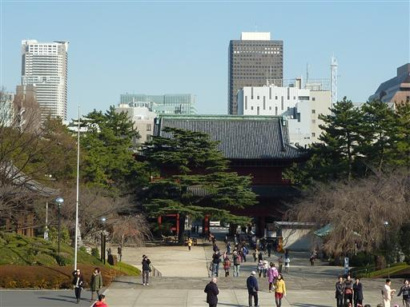
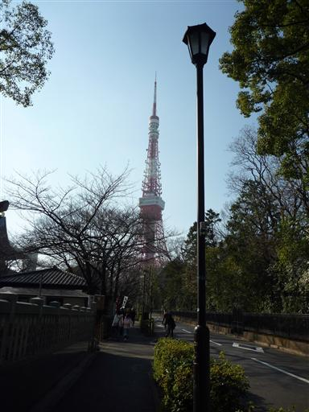
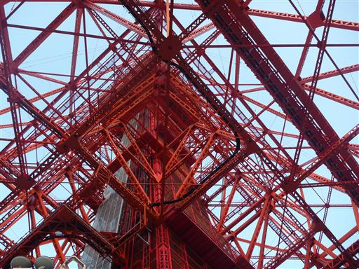
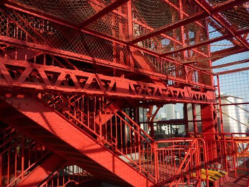
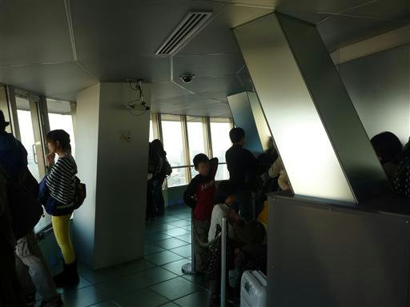
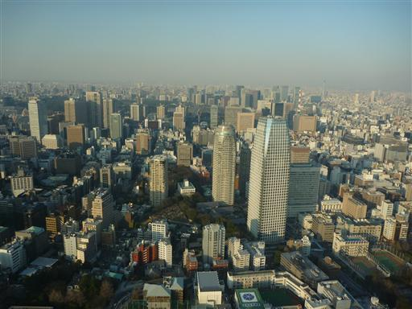
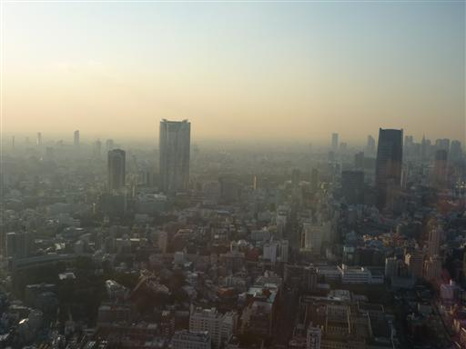
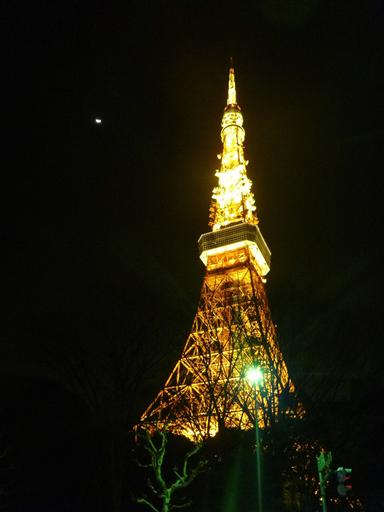

東京タワー
| 日付 | 2010年2月20日（土） |
|---|---|
| メンバー | 友人（男1女1） |
| アクセス | 電車 |
東京に来て一度も行った事のない観光地・東京タワー。
日本一高い建造物という地位を保っている間に行ってみることにする。
東京タワーのお膝元にある増上寺。なかなか大きな寺だ。
東京のど真ん中にこんな大きな敷地の寺があるとは知らなかった。

寺を抜けて東京タワーに向かう。

下から見上げる。

東京タワーの大展望台(150m)までは階段で登ることができる。
真っ赤に塗られた階段を登っていく。

大展望台からはエレベータで特別展望台(250m)へ。
エレベータの数は1つしかないため、ここまで来るのにえらく待たされる。

東京の街並み。10階建て程度のビルは非常に小さく見える。

六本木ヒルズ（左）と東京ミッドタウン（右）はよく目立つ。
どちらも東京を代表する巨大ビルだ。

下の売店でうろうろしたあと、外に出るともう真っ暗。
きれいにライトアップされている。
